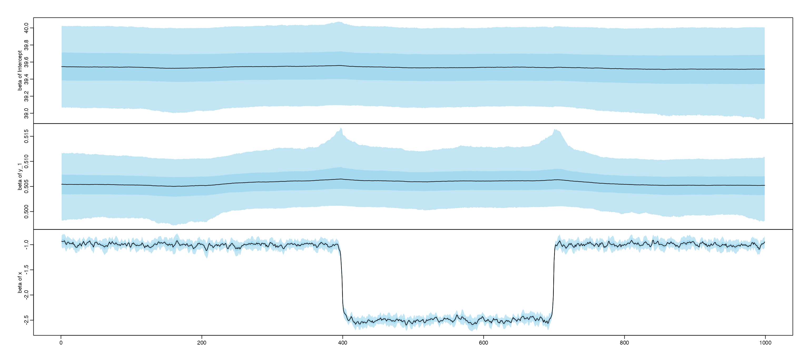
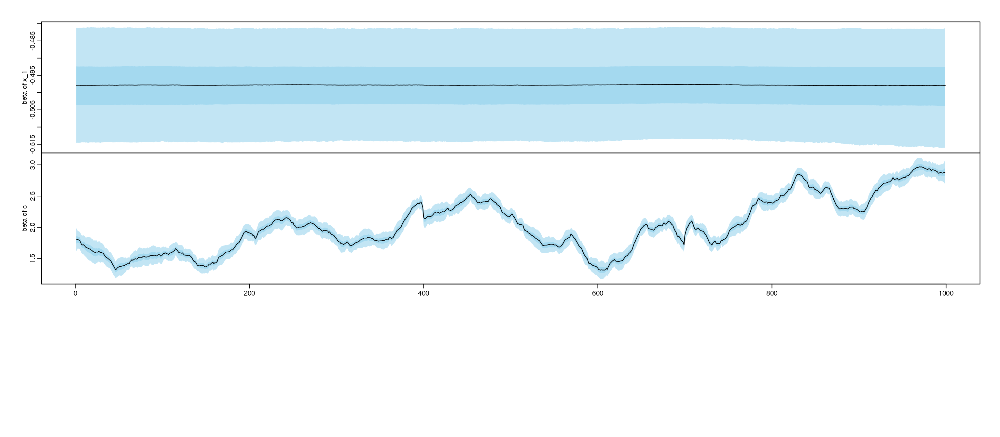
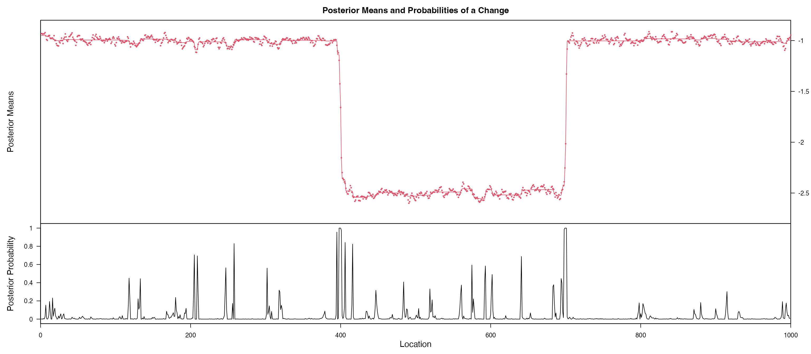
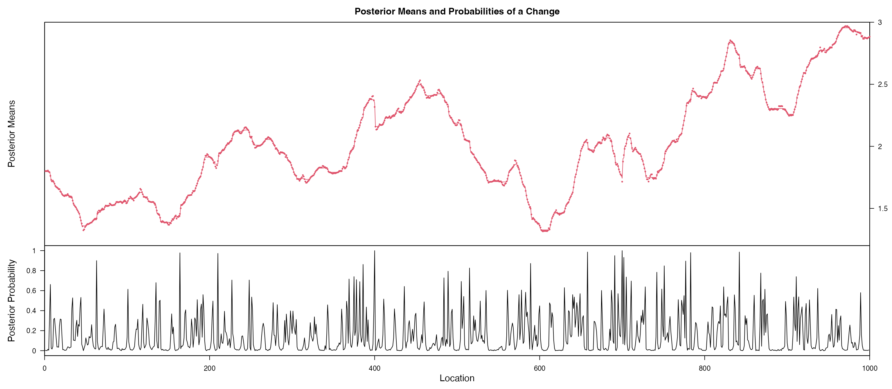

As we mentioned in the Quick start, we usually need an initial guess
of formula, and set up the ss_param and
cpt_learning_param, this requires our knowledge of each
coefficient \(\beta_{j,t}\) and we will
ask questions of whether this variables should goes into our model, what
is the state-space equation, what is an appropriate initial value and if
there is any change point. Sometimes this question can be answered by
domain knowledge. Here we provide a function for an automatically
exploration and help users identify the formula and parameters as easy
as a one line code. The idea is based on shrinkTVP which
incorporates Bayesian hierarchical shrinkage for state-space model, to
achieve a two-way sparsity. Details can be found:..
head(data_complex)
#> Date y x c y_1 x_1
#> 2 2020-02-07 79.43535 12.3290419 6.145098 82.18145 2.4949289
#> 3 2020-02-08 75.06166 5.2927101 3.655687 79.43535 12.3290419
#> 4 2020-02-09 85.71720 0.9862238 6.413653 75.06166 5.2927101
#> 5 2020-02-10 83.22922 7.6992702 4.533435 85.71720 0.9862238
#> 6 2020-02-11 88.17003 11.7192263 11.722012 83.22922 7.6992702
#> 7 2020-02-12 86.50519 10.2398440 10.196931 88.17003 11.7192263
res = shrinkTVP(formula = y ~ y_1 + x + x_1 + c, data = data_complex)We start our exploration:
SSMimpute::explore_SSM(res = res)
#> Hit <Return> to see next plot:
#> Warning: `as.tibble()` was deprecated in tibble 2.0.0.
#> ℹ Please use `as_tibble()` instead.
#> ℹ The signature and semantics have changed, see `?as_tibble`.
#> ℹ The deprecated feature was likely used in the SSMimpute package.
#> Please report the issue at
#> <#> # A tibble: 5 × 7
#> coef mean sd median HPD1 HPD2 ESS.var1
#> <chr> <dbl> <dbl> <dbl> <dbl> <dbl> <dbl>
#> 1 Intercept 39.5 0.245 39.5 39.0 40.0 510
#> 2 y_1 0.506 0.00384 0.506 0.497 0.513 143
#> 3 x -0.925 0.0967 -0.927 -1.11 -0.732 1044
#> 4 x_1 -0.497 0.00935 -0.497 -0.516 -0.480 536
#> 5 c 1.80 0.104 1.80 1.60 2.00 423
#> Press [enter] to see the non-stationary coefficient:
#> # A tibble: 2 × 7
#> variance mean sd median HPD1 HPD2 ESS.var1
#> <chr> <dbl> <dbl> <dbl> <dbl> <dbl> <dbl>
#> 1 x 0.0577 0.00263 0.0576 0.0523 0.0626 589
#> 2 c 0.0422 0.00312 0.0421 0.0360 0.0480 255
#> indicating non-stationary process for: x c ;
#> Press [enter] to further checking for change points:
#> Press [enter] to further checking fitted ARIMA model
#> Series: B_1
#> ARIMA(1,1,0)
#>
#> Coefficients:
#> ar1
#> 0.4824
#> s.e. 0.0277
#>
#> sigma^2 = 0.001118: log likelihood = 1977.77
#> AIC=-3951.54 AICc=-3951.53 BIC=-3941.73
#>
#> Training set error measures:
#> ME RMSE MAE MPE MAPE MASE
#> Training set 1.59262e-06 0.03339588 0.01977559 -0.003725557 1.579186 1.016588
#> ACF1
#> Training set -0.01078407
#> Series: B_1
#> ARIMA(1,1,2)
#>
#> Coefficients:
#> ar1 ma1 ma2
#> 0.8300 -0.3613 -0.0668
#> s.e. 0.0376 0.0511 0.0401
#>
#> sigma^2 = 0.0002044: log likelihood = 2827.31
#> AIC=-5646.61 AICc=-5646.57 BIC=-5626.99
#>
#> Training set error measures:
#> ME RMSE MAE MPE MAPE MASE
#> Training set 0.0003281337 0.01426691 0.009231146 0.01782985 0.4730537 0.7139447
#> ACF1
#> Training set 0.002424204Based on the figures, we notice coefficient of x and
c are probably non-stationary, we further using
bcp for a Bayesian change point detection, gives a
posterior probability of change point in each change point. We notice a
clear change point for x is 400 and 700. and the coefficent
for c is probably a random walk.